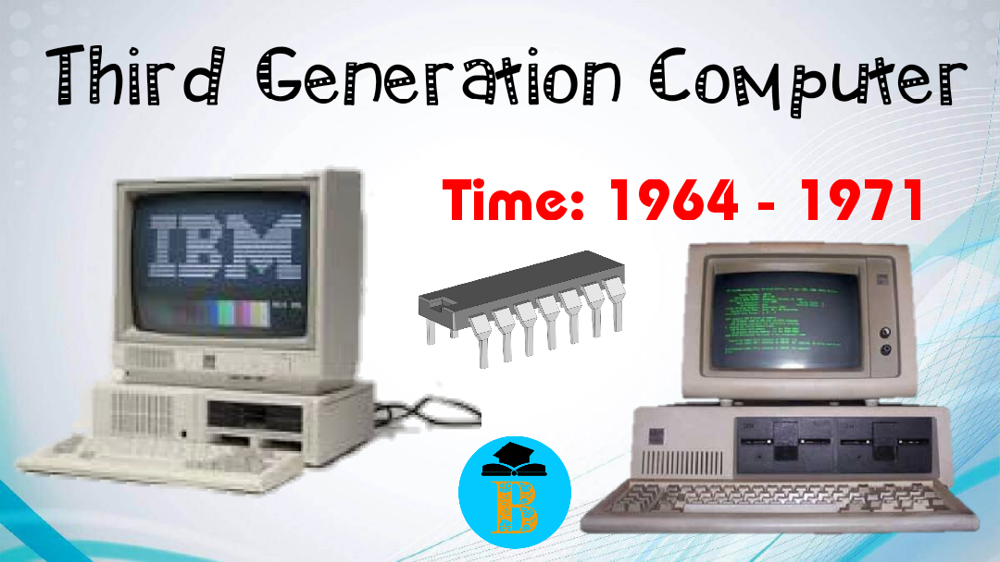

Computer Systems 3rd Generation
.jpg)
1965-1971
The computers of third generation used Integrated Circuits (ICs) in place of transistors. The IC was invented by Jack Kilby. The third generation was brought about by advances in the manufacture of transistors; scientists and engineers that where able to this development made computers smaller in size, reliable, and efficient. In this generation remote processing, time-sharing, multiprogramming operating system were used. The main features of the third-generation computers were that they; used Integrated Circuits, reliable in comparison to previous two generations, smaller in size, generated less heat, faster in terms of speed, lesser maintenance, still costly, A.C needed, and consumed lesser electricity. computers were cheaper in price, smaller in size, less heavy in weight, faster in speed and more efficient. It was during this time that many high-level programming languages were gaining widespread use, programming languages such as C, Pascal, COBOL and FORTRAN. Magnetic storage also became more popular in this era
The main features are:
- IC used
- More reliable in comparison to previous two generations
- Smaller size
- Generated less heat
- Faster
- Lesser maintenance
- Consumed less electricity
- Supported high-level language
Computers in this generation
- IBM-360 series
- Honeywell-6000 series
- PDP (Personal Data Processor)
- IBM-370/168
- TDC-316